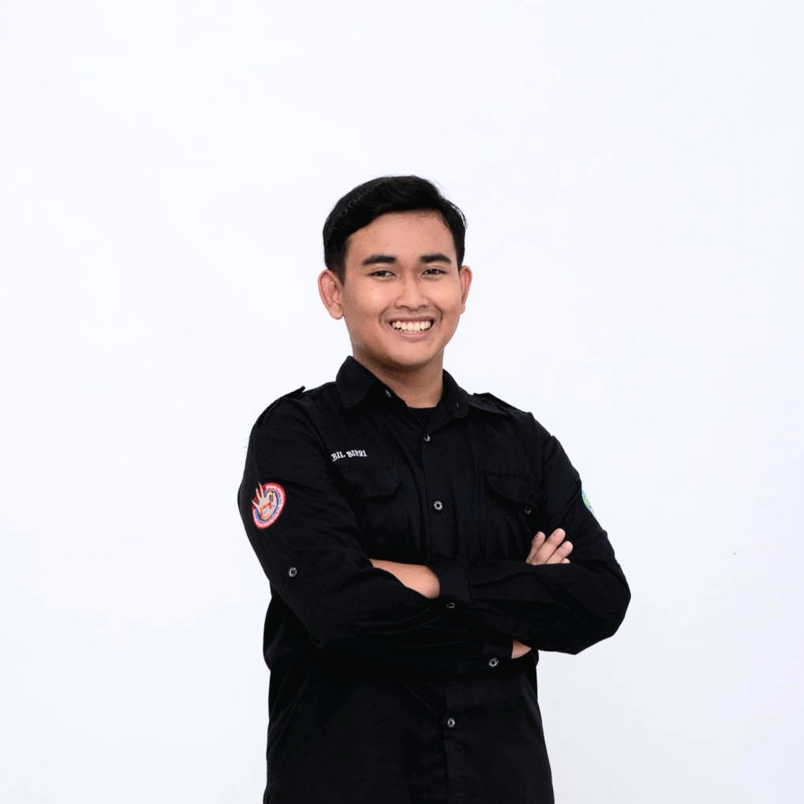

Halo, selamat datang!
Saya Nabil Birri
Desain Grafis, Konten Digital, dan Dunia Kreatif
Saya memiliki ketertarikan pada desain grafis, pembuatan konten, dan dunia kreatif digital. Saya senang belajar hal baru serta mengembangkan kemampuan melalui berbagai pengalaman.

Kenali lebih dekat
Tentang Saya
Profil Singkat
Saya merupakan Mahasiswa teknik informatika Semester 1. Saya memiliki minat dalam bidang desain grafis, khususnya pembuatan poster, pamflet, dan konten media sosial. Saya terbiasa bekerja secara mandiri maupun bersama tim.
Pendidikan dan Pengalaman
SMA Negeri 3 Nganjuk
MIPA Informatika | 2023–2026
Forum Genre Anjuk Ladang
Koordinator Bidang Media dan KIE | 2025–2026
Komunitas Literasi SMA Negeri 3 Nganjuk
Anggota Divisi Desain Grafis | 2023–2025
Keahlian
- Desain konten media sosial
- Perencanaan konten
- Identitas visual sederhana
- Penyuntingan video dasar
- Microsoft Office dan Canva
Pencapaian
- Harapan 1 Putra Duta Genre Kabupaten Nganjuk (2025).
- Finalis 20 Film Terbaik Lomba Film Pendek Literasi (2025).
- Juara 3 Video Competition Festival Hari Anak Kabupaten (2024).